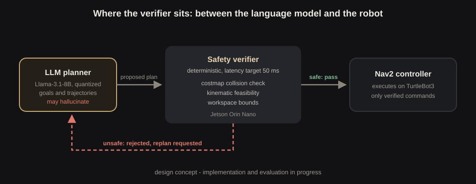
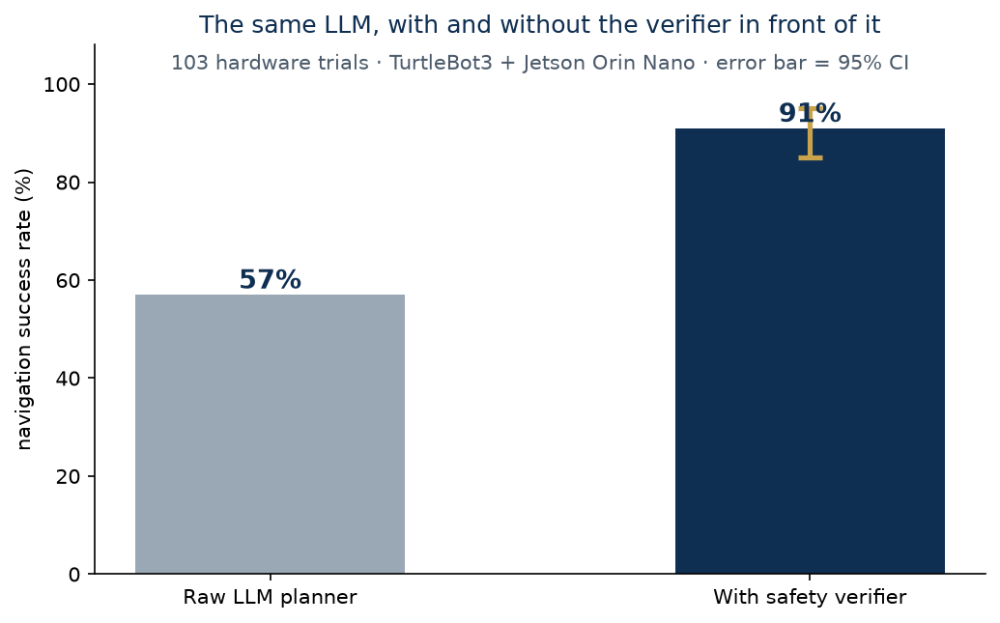

Language models are being handed the steering wheel of real robots, and sometimes they invent a goal inside a wall. This project puts a deterministic verifier between the LLM and the hardware.
Ask a large language model for a navigation goal and it usually gives a sensible one. Usually is the problem. Across 103 real trials, a quantized Llama-3.1-8B produced plans that failed on hardware almost half the time: goals inside obstacles, paths through people, waypoints that never existed. On a screen that's a wrong answer; on a robot it's a collision.
The insight this project runs on: you don't need another neural network to check the first one. A deterministic verifier, checking each proposed trajectory against the costmap, the robot's kinematics, and the workspace bounds, gives a yes or no in under 50 milliseconds, every time, with no hallucinations of its own.


The verifier caught 94% of unsafe trajectories while rejecting fewer than 4% of good plans, and lifted end-to-end navigation success from 57% to 91%. The whole check costs less than 50 ms per plan, small enough to be invisible next to LLM inference itself.
The repository currently ships the reproducible Docker development environment (identical on x86_64 and Jetson arm64) with CI keeping it green. The verifier node, the full failure-mode study, the 103 raw trial bags, and demo videos are being prepared for release alongside a planned Nav2 integration proposal.